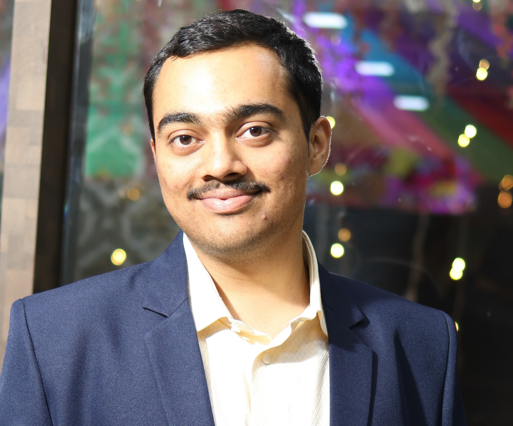

Akash Pandey

Summary
I am a hardworking and dedicated individual with experience in manual and automation testing.
Education
- Bachelor of Engineering, Electronics and Telecommunication - University of Mumbai (2017-2021)
Work Experience
-
Analyst - Deloitte Consulting
October 2021 - Present
- Analysed 100+ user stories for testing coverage of all scenarios
- Automated 500+ scripts for timely execution of testing
- Manually tested 200+ test cases including authoring and execution
- Raised and resolved 50+ bugs ensuring the quality of application
- Worked on uploading of test case results on jira tool
- Worked on CI/CD execution of test cases using jenkins
- Experience of different types of testing like API testing, ETL testing
Skills
- Languages: Python, SQL
- Technologies: Robot framework, Jira, Jenkins
- Microsoft Tools: Excel, Word
Awards
- Spot Award (March 2023)
- Special Award (June 2024)
- Outstanding Award (April 2025)
Other